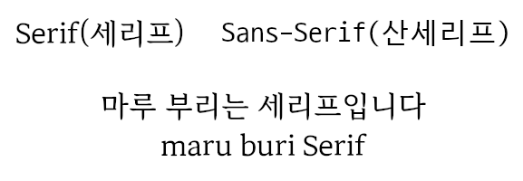

2025-01-03 00:39:00
전자책으로 책을 보기 시작하면서 왠지 기본 글꼴들이 마음에 들지 않아서 글꼴을 조금 찾아봤다. 평소에 코딩할 때도 네이버의 D2Coding 글꼴을 주로 사용하기 때문에 네이버의 글꼴 모음(https://hangeul.naver.com/font)에서 나온 마루부리 글꼴(https://hangeul.naver.com/maruproject_11)이 제법 마음에 들어서 모든 전자책 앱에서 '마루 부리 글꼴'을 사용하게 되었다. 특히 마루 부리 글꼴 중에서도 semi-bold 의 굵기가 전자책을 읽기에 가장 괜찮은 것 같다
간단히 소개하자면, "화면에서 고딕체로 편중된 글꼴 환경을 넘어 콘텐츠를 폭넓게 담을 수 있는 디지털 한글의 원형을 제시하는 글꼴" 이라고 한다. 보통 컴퓨터에서는 sans-serif 라고 하는 '획의 삐침(serif)'이 없는 글꼴(D2Coding, 돋움체등)을 주로 쓴다. 반대로 serif 라고 하면 대표적으로 '궁서체'가 있는데, 초창기 윈도우에서는 한글 글꼴의 다양성을 주는 고마운 존재였다. 아래의 스크린샷을 보면 그 차이를 쉽게 알 수 있다

- 글꼴 테스트 사이트: https://hangeul.naver.com/fonts/search?f=maru
- 글꼴 다운로드 사이트: https://hangeul.naver.com/font
blog 에서 직접 다운로드: maruburi_font
사실 이 포스팅을 하는 이유가 너무 마음에 드는 마루 부리 글꼴 소개도 있지만, 공식 사이트를 통해서는 모바일/전자책에서 글꼴 다운로드가 쉽지 않아서도 있다 :)